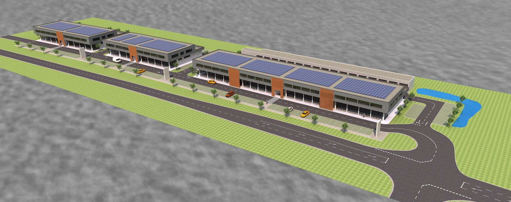
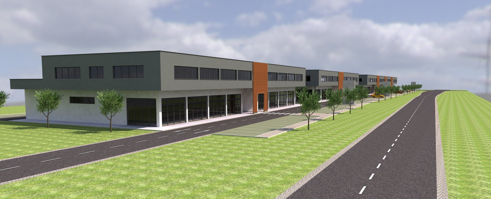

Architektur
Die vorhandenen Visualisierungen geben einen ersten Eindruck des Projekts.

TEICHWIESE · Erste Designprobe
Ein erster Blick auf Teichwiese. Architektur und Freiraum als Ausgangspunkt für einen neuen Webauftritt.

Das Projekt kennenlernen
Die vorhandenen Visualisierungen geben einen ersten Eindruck des Projekts.
Konkrete Einheiten, Grössen und Nutzungsmöglichkeiten ergänzen wir im nächsten Schritt.
Adresse, Anreise und Umgebung werden mit den bestätigten Projektdaten ergänzt.
Perspektiven

Visualisierungen aus den Projektunterlagen. Entwurfsstand, keine Zusage zur Ausführung.
Wir entwickeln den Auftritt gemeinsam weiter. Dieser Entwurf zeigt Gestaltung und Seitenaufbau; Kontaktdaten und verbindliche Projektinformationen folgen.
Zur Entwurfsauswahl →